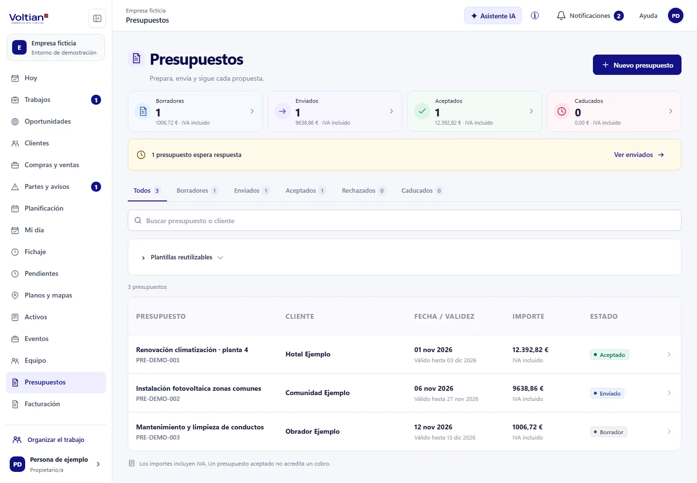
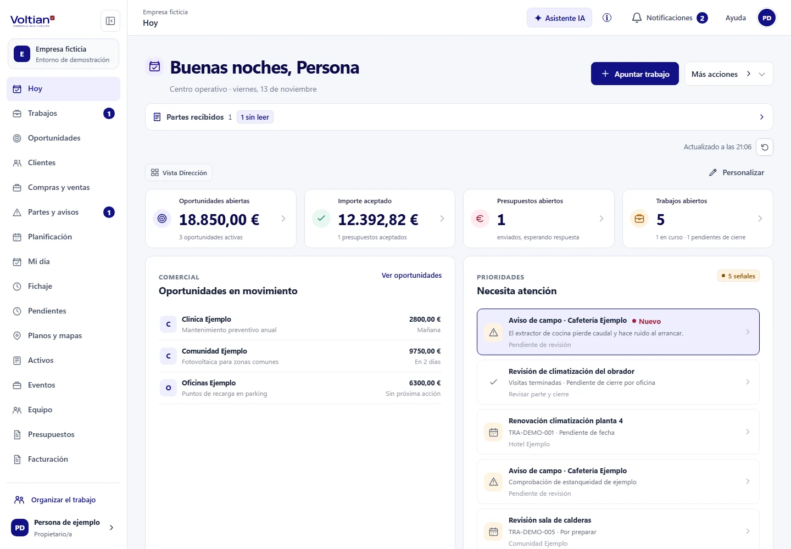
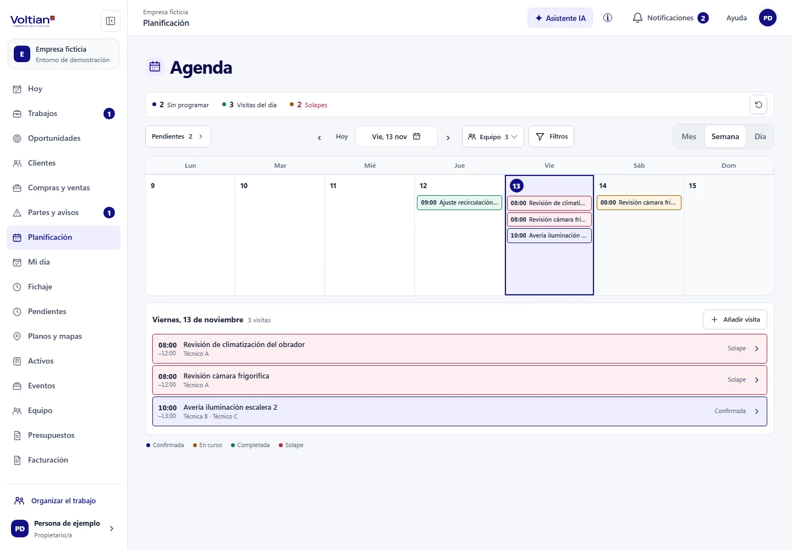
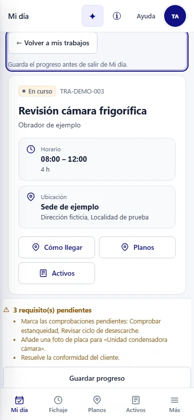

Preparas el presupuesto.
Abres la ficha del cliente, preparas las partidas y ves qué propuestas esperan respuesta. Cuando se acepta una, puedes llevar lo acordado al trabajo.


Portfolio · Voltian OS
Creé Voltian OS desde cero para instaladoras y empresas de mantenimiento. Quería que quien prepara el presupuesto, quien organiza las visitas y quien hace el trabajo tuviesen el mismo contexto.

Cómo funciona
Piensa en una revisión de climatización. El cliente pide precio, alguien tiene que cuadrar la visita y después hay que saber qué se hizo. Así se sigue ese trabajo en Voltian.
Abres la ficha del cliente, preparas las partidas y ves qué propuestas esperan respuesta. Cuando se acepta una, puedes llevar lo acordado al trabajo.

En la agenda ves a quién puedes asignarla y si coincide con otro trabajo. El equipo de campo consulta desde el móvil dónde tiene que ir y qué va a hacer.

Desde el móvil puedes registrar lo realizado, adjuntar fotos y materiales y recoger la conformidad del cliente. En oficina se revisa el parte y se decide si queda algo por hacer.
Ver Trabajos en la demo
Capturas de la aplicación con datos ficticios. Algunas funciones dependen del plan y de la configuración.
Demo interactiva
Puedes buscar un cliente, abrir su presupuesto y seguir el trabajo hasta el parte y el cierre simulado.
Además de las visitas
Por dentro
Construí Voltian con React y TypeScript, una API en Fastify y PostgreSQL. Para el portfolio preparé ejemplos independientes que puedes leer o probar.